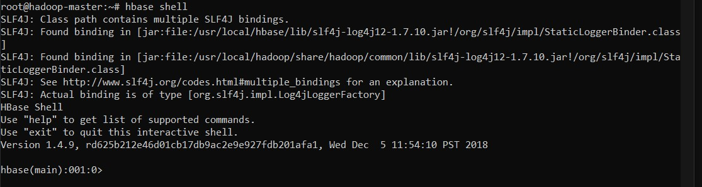

Compte rendu du TP n° 4 : Stockage de Données dans une Base NOSQL avec HBase
Réalisé par Fourati Aymen & Helali Eya
Partie 1 : Première manipulation de HBase
Initialisation de l’environement

Manipuler votre base de données avec son shell interactif

Commençons par créer la table, ainsi que les familles de colonnes associées
HBase API
Dans votre contenaire principal, créer un répertoire hbase-code à l’emplacement de votre choix, puis déplacez-vous dedans.
 Tout en restant sous le répertoire hbase-code, compiler cette classe:
Tout en restant sous le répertoire hbase-code, compiler cette classe:
Partie 2 : Chargement de fichiers
Calculer le nombre d’enregistrements
Activités : Modification du code pour pouvoir calculer le total des ventes